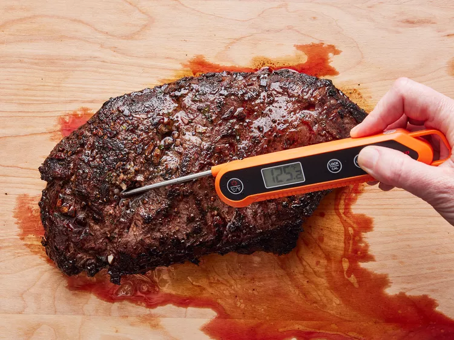

Flat Iron Steak

Description:
Craving a delicious steak? Try this recipe out! After multiple attempts and changes to the ingredients and cooking time, I have perfected the way to cook a Flat Iron Steak!
Ingredients
- 1 (2lb) flat iron steak
- 2 1/2 tablespoons olive oil
- 2 cloves garlic, minced
- 1 teaspoon chopped fresh parsley
- 1/4 teaspoon chopped fresh rosemary
- 1/2 teaspoon chopped fresh chives
- 1/4 cup Cabernet Sauvignon
- 1/2 teaspoon salt
- 3/4 teaspoon ground black pepper
- 1/4 teaspoon dry mustard powder
Steps
- Place steak inside a large resealable bag. Stir olive oil, garlic, parsley, rosemary, chives, red wine, salt, pepper, and mustard powder together in a small bowl.

- Pour marinade over steak in the bag. Press out as much air as you can and seal the bag. Marinade in the refrigerator for up to 2 to 3 hours.

- Heat a nonstick skillet over medium-high heat. Sear and cook the steak in the hot skillet for 3 to 4 minutes on each side for medium rare, or to your desired degree of done-ness. An instant-read thermometer inserted into the center should read 130 degrees Farenheit (54 degrees C) for medium rare.

- Discard the marinade. Allow the steaks to rest for about 5 minutes before serving, allowing the juices to absorb back into the steak.

- Enjoy!